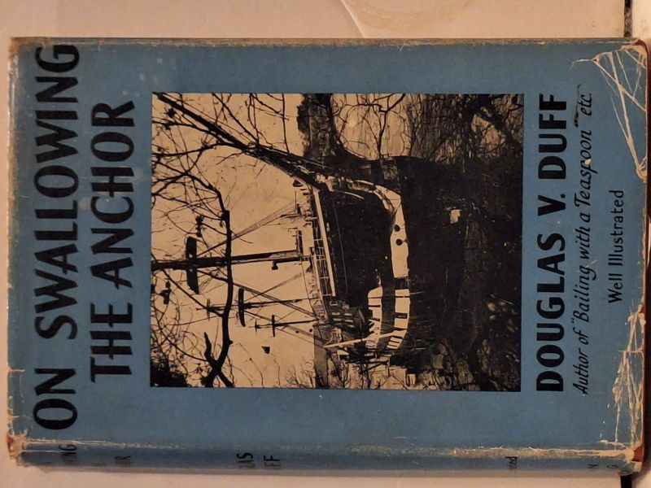

On Swallowing the Anchor
Douglas V. Duff · John Long Limited, London, 1954

C$25.0 · Good condition
John Long Limited, London (with Melbourne, Sydney, Auckland, Bombay, Cape Town, New York, Toronto branch listings), 1954 first edition. Stated 'First published 1954'. Printed in Great Britain by The Anchor Press, Ltd., Tiptree, Essex. Nautical memoir by Douglas V. Duff (author of 'Bailing with a Teaspoon' etc.), with 18 illustrations. Frontispiece caption: 'H.M.S. Conway in the glory of her last year in the Menai Strait. The sea-mother of 10,000 sons, the captains and officers of Britain's ships.' Light blue pictorial dust jacket showing the H.M.S. Conway shipwreck photograph. Hardcover with original DJ. DJ shows edge wear and small chips; light foxing to free endpaper which carries a previous owner's pen signature.
Details
- Publisher: John Long Limited, London, 1954
- Binding: Hardcover
- Edition: First Edition
- Condition: Good
- Dust jacket: Good
- Category: Military